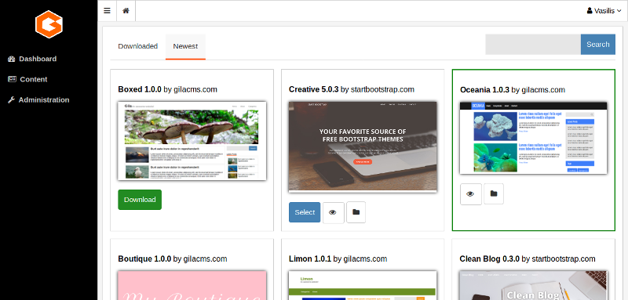

Administration¶
In the administration menu you the Administration option gives a sub menu of the basic administration areas
Users¶
Users are the persons that you can grand access to website and give them privileges to create or edit content. On Users tab you can add new or modify existing users.
User Roles¶
On Roles you can add new roles for the users. Roles represent job functions and through them users acquire specific permissions.
 Roles
Roles
Permissions¶
On Permissions you can set the common permissions that all registered users can have or to specific user roles. Permissions grand to the users access to resources or perform certain operations.
 Permissions
Permissions
Widgets¶
Widgets are some blocks that you can show them on the layout of the website and improve the user experience of the visitors. Widgets can be for example menus, comment sections, text blocks, lists of links. Every page have four values:
- ID: a unique identifier
- Title: the title of the widget
- Type: widget type
- Widget Area: is where the widget will be displayed. Can be an area in a view from the website theme or the administration.
- Position: the position of the widget in the widget area.
- Active: if the widget is visible or not.
Notice: When you create a new widget you can set the type of the widget, this field cannot not be changed later since it determines the widget’s structure of the data.
Packages¶
Packages give new functionalities on your web application. They may add a specific widget, a few new links in the administration menu or add new content and new templates to show the content. For example Facebook Comments Plugin add a facebook comments section below every page post. Featured Posts Grid show the thumbnails photos from featured posts in the front page of a blog theme.
You can administrate packages from Administration->Packages
 Packages
Packages
The installed packages usually show an Options button. By clicking this button you can change some parameters for the specific package. When you save the settings the changes will take effect by reloading the page.
 Packages
Packages
Themes¶
Themes change the look and style of your website. They use different colors and fonts and helps your visitors identify your website and improve their user experience (UX).
You can select the theme from Administration->Themes
Themes
The selected theme usually shows an Options button. By clicking this button you can change some options for the theme like the header image (logo) of the website or the main color.
Settings¶
On Administration->Settings page and we can make the following configurations
Basic Settings¶
- Title is the website title. It will appear up from the menu if we don’t use a logo from the theme options.
- Description is a small text that describes the website.
- Website URL the url path for exmple ‘https://mysite.com’
- Admin Email sets the email of the administration.
- New users can register adds the registration form for the visitors so they can register as users.
- Theme changes the look and style of your website. You can also change the theme from Administration->Themes
- Timezone The dates and times saved in posts, logs and the rest of the content will be based on the selected timezone.
- Language The language of the website and the administration menu.
- Admin Logo set the image to display to administration menu and login screen.
Advanced Setting¶
You change these setting if you are developing or set up the installtion.
- Use CDN Use CDN for static files of popular libraries (jquery.js, vue.js). It’s not advised for local installation where internet connection may fail.
- Pretty Urls turns ?c=blog&action=tag&tag=linux into blog/tag/linux. If is not selected by default then your apache server may not have the mod_rewrite enabled.
- Default controller The controller that will be used if the calling path do not provide it as first parameter. For example the Admin controller is used when we call mysite.com/admin but when we call mysite.com or mysite.com/my-post the default controller will be used, which is Blog, so these paths are egual with mysite.com and mysite.com/my-post. There is not need to change the default controller unless you want to change how the website will be used.
- Environment If changes to Development the website wont use the combine load.php from the packages and will display all notices and errors of the back end. Must use it when you make changes in the code.
- Check For Updates will automatically search for new updates on packages and display alerts.
- Use WEBP your website will save resized images as webp images, their size is al least 10% small from jpeg or png.